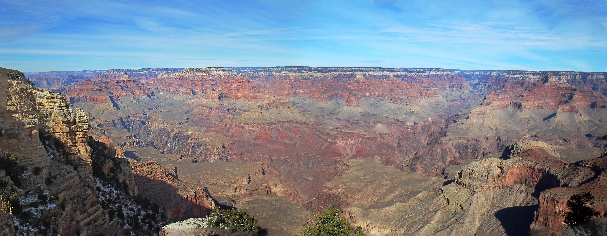

“For me, the camera is a sketch book, an instrument of intuition and spontaneity.” I first discovered photography when I was in college; my Uncle brought me one back from the United States, an old vintage piece that caused me to frequent the nearby camera store to get film developed. Since then, it has been a passion of mine. I started with being the designated family photographer, as well as the documenter for college outings and activities.
Once I moved to Dubai, I started caputuring more of the environment, sights, and myself and my wife to send to our family members back home in India. This continued once we moved to the US and had a child, and in my free time I learned more about camera settings, shoot layouts, and editing software. Today, I get to continue my hobby wherever I go and have come a long way from where I started.
Hello, my name is Sridhar Ramamoorthy and I am a hobbyist Photographer from St. Louis, MO. I mainly specialize in outdoor photography, especially nature and wildlife photography. I usually take my camera with me on trips, vacations, and for events; you can usually find me with it on most travels. All photographs were shot with either a Canon 7d Mark II or Canon T5i, and most editing done with Adobe Photoshop. For any queries or questions, you can contact me at: sridhar_r14@hotmail.com. I will do try my best to respond in a timely manner. In the meantime, feel free to take a look and I hope you enjoy!
